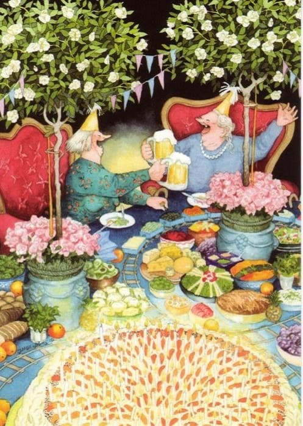
Это полные задора истории о двух неунывающих старушках, которые всегда знаю, чем себя занять, полны позитивной энергии, веселья и неисчерпаемого оптимизма.
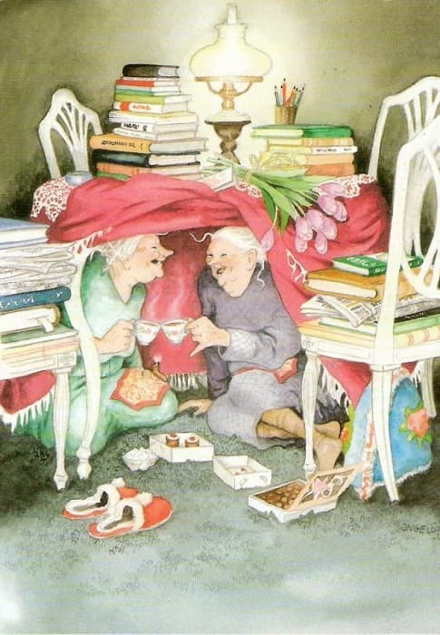
Ингеборг Ливонен Ingeborg Lievonen – это настоящее имя художницы-иллюстратора из Финляндии, которая и стала автором серии открыток «Аnarkistiset mummot», что в дословном переводе с финского - «Бабушки-анархистки».
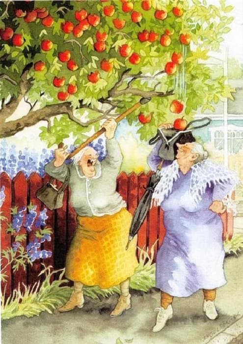
Интересно, что у ее персонажей были вполне реальные прототипы. Когда Инге была маленькой девочкой, ее семья жила в Хельсинки и рядом с ними проживали две приятные пожилые дамы, отличавшиеся доброжелательностью и веселым нравом.
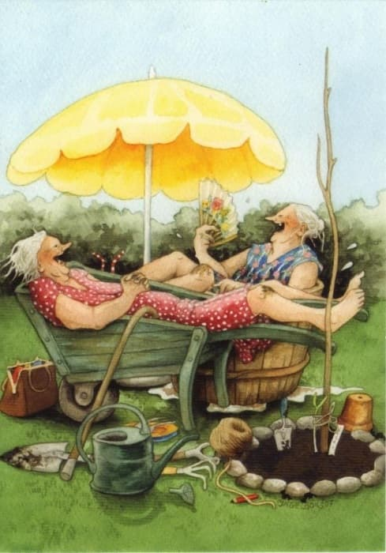
На сегодняшний день известная всему миру финская художница живет и творит в небольшой деревушке Pernaja, на ее счету более трех сотен открыток, на различную тематику. Иллюстрирует она также книжные издания и глянцевые журналы, в том числе и на садоводческие темы. Однако широкую популярность и известность ей принесла серия открыток, посвященных весёлым и задорным, не желающим стареть и унывать старушкам по имени Фифи и Алли.
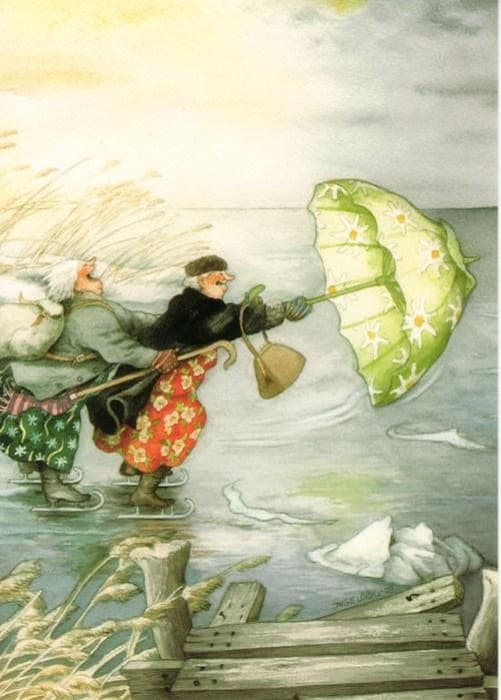
Инге профессиональный ландшафтный дизайнер . А однажды ей предложили сделать несколько зарисовок для газеты. С этих газетных зарисовок началась карьера Инге как иллюстратора.
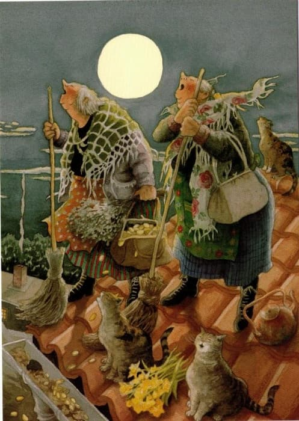
Инге Лёёк нарисовала первые четыре изображения Веселых тетушек в 2003 году.
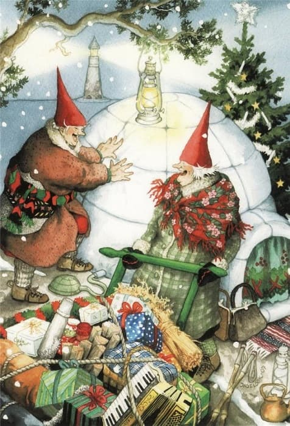
Эти иллюстрации были задуманы как открытки ко Дню святого Валентина, но неожиданно сезон оказался довольно длинным.
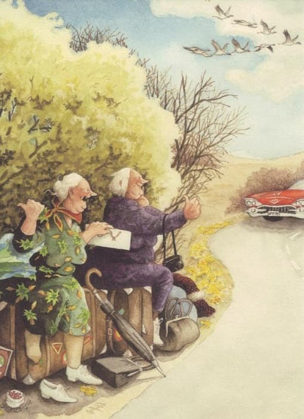
Большинство приключений тетушек, нарисованных Инге Лёёк, показывают то, что она видит в реальной жизни.
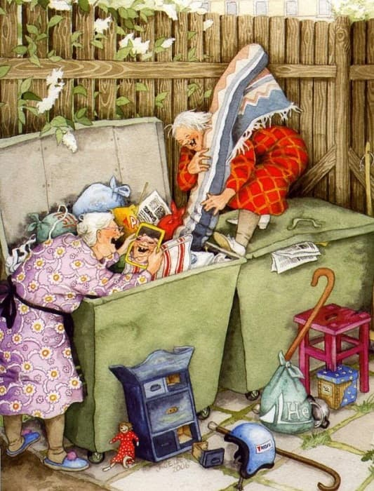
И вы можете рисовать и печатать в типографии Лазурь свои эксклюзивные открытки для своих родных и друзей !!!
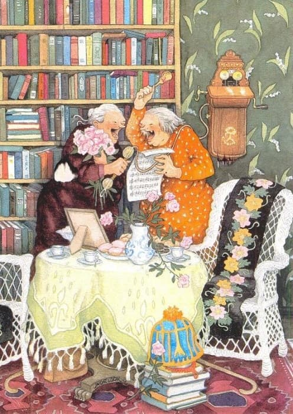
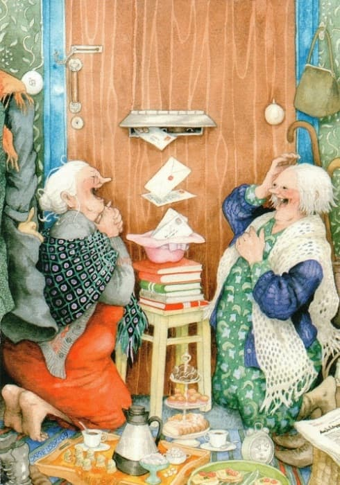
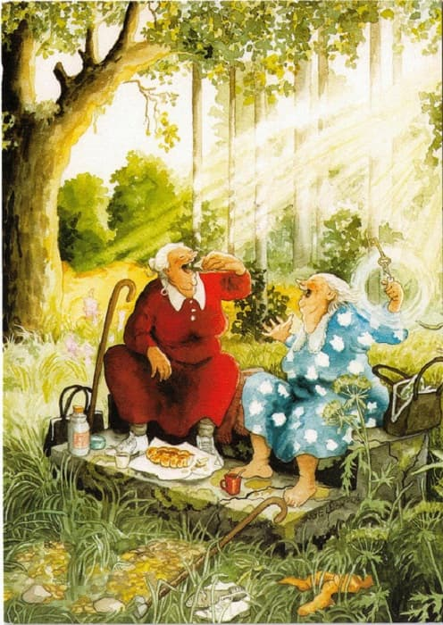